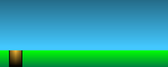

If you put the HTML file in a browser, it will look like this:
Here is what you get in the body of the starting HTML:
<svg xmlns="http://www.w3.org/2000/svg" viewBox="0 0 1000 400">
<!-- The game over text -->
<g id="gameover-container">
<text id="gameover" x="0" y="0" fill="red"
font-size="80px" text-anchor="middle">Game Over</text>
</g>
</svg>
It contains a simple SVG area, with the text 'Game Over' in the middle of the screen
The coordinate system of the SVG area has been set up using the viewBox attribute
so that the top left corner is (0, 0) and the bottom right corner is (1000, 400)
Even if you change the size of the browser, the coordinate system will remain the same within the SVG area, i.e. the coordinate system is not related to the actual size of the SVG area in the browser
To make the game, you need to:
Create the necessary SVG elements into the game, which include:
the sky
the ground
some clouds
the player
a hole/flower on the ground
Make appropriate CSS animations for the SVG elements
Control the animations using JavaScript
Similar to before, this game uses a Google font that you can see from the link:
The above rectangle will create a blue area in the background of the game:
You can then make some adjustments to the colour of the rectangle
For example, you can add a gradient to make the sky look more vibrant
An example is shown below:
You can inspect the source of the above blue area to see how the SVG code is written
2.2. Using SVG Edit
If you are not too sure about writing your own SVG code, you can make use of
SVG edit
to help you do that
You can draw different sorts of things inside SVG edit by experimenting with the tools
To make the drawing area inside SVG edit compatible with the one in the game, you can change the size of the document to 1000x400 in the document properties as shown below:
Opening the document properties window...Changing the size to 1000x400
Once you have finished the picture, the important thing is to copy the relevant SVG code to your game
You need to be careful when you copy and paste your code
Sometimes you may need to copy the things inside the <defs> area
If you are adventurous enough, you can also try to draw things using Adobe Illustrator
You can access the software from the ITSC virtual barn
Once you draw a picture inside Adobe Illustrator, you can save the picture as an SVG file
You can then again copy the relevant SVG code from the file to your game area
2.3. Searching for SVG Pictures on the Web
If you want to include some fantastic pictures in your game, it may take you a long time to draw/make one
Then the simplest way is to 'borrow' one from the Web
You can search for SVG pictures easily using Google search
You can either:
Change the advanced settings in Google Image search to include only SVG results
Alternatively, search for SVG files using the filetype:svg directive
For example, here are the results of searching for 'Hello Kitty' in Google:
Once you have chosen a desired SVG picture from the result
You can again copy the appropriate SVG code into your game
However, most of the time the pictures on the Web may not have the size that you want
In this case, you can use SVG edit to help you:
Copy and paste the relevant SVG code into SVG edit
Group any SVG elements together (select all elements, right click and then select group)
Reduce the size of the entire group
Copy the modified SVG code and put it in your game
2.4. The Elements in the Game
For each object in the game, it may consist of many SVG elements
It may be a bit hard to handle the SVG elements if they scatter all over the place
Therefore, you should group the SVG elements of an object together and give the group an element so that you can work with the group later
For example, if you have copied some SVG code as the player picture, you should make a group for the copied code, like this:
<g id="player">
...SVG elements for the player...
</g>
In your game, you should at least have these objects ready:
<g id="cloud">
...SVG elements for a cloud...
</g>
<g id="obstacle">
...SVG elements for a hole/flower...
</g>
<g id="player">
...SVG elements for the player...
</g>
They should be put right before the given 'Game Over' text in the SVG code
Notice that the above groups do not include the sky and the ground
This is because you do not really need to create animation or write code for them so that they do not require any id or group
3. Making the Animations
At this stage, you should have the SVG objects ready
In this part, you will make CSS animations for the three things in the game:
The cloud
The obstacle
The player
If you want to, you can hide the game over text, by setting the display property to none, before working with the animations
3.1. Animation for the Cloud
Assume that you have your cloud ready inside an SVG group, i.e.
<g id="cloud">
...SVG elements for a cloud...
</g>
You will make an animation for the cloud to move slowly from right to left
To do that, you first need to create the @keyframes rule for the cloud animation
The Keyframes Rule
The @keyframes rule in CSS defines the change of CSS properties for a particular animation
The simplest way of writing the @keyframes rule is like this:
@keyframes ...name... {
from { /* ...CSS properties here... */ }
to { /* ...CSS properties here... */ }
}
Since you want to change the x position of the cloud to move from right to left,
you can make use of the transform property to do that
For example, you can move the cloud to the right side of the SVG area by translating it using a big number,
e.g. transform: translateX(1000px)
It is likely that the above transform property will move the cloud out of the visible area of the SVG
Exactly how much you need to move also depends on the initial position of your object
For example, if you put the cloud (the white shape) initially next to the left edge of the SVG area, i.e.:
using transform: translateX(1000px) will exactly put the cloud just outside the right edge of the SVG area
So using a big value of translateX moves the cloud to the right and,
similarly, using a small value of translateX moves the cloud to the left
The @keyframes rule can be set up like this:
@keyframes cloud-animation {
from { transform: translateX(1000) }
to { transform: translateX(-120) }
}
A negative value is used for the target translateX
because you would want to move the cloud out of the left edge of the SVG area
The values that you need to use, again, depend on the initial position of your cloud and the size of the cloud
so you will need to experiment a bit
The Animation Property
After setting up the @keyframes rule, you can then apply the rule to the cloud group
In the notes, we always set the animation property with the name and duration together
An alternative way is to use the animation-name and animation-duration properties separately
That means you can apply the animation using the following CSS properties for the group:
animation-name
This is the @keyframes rule that you want to use for the group
It will be the name of the @keyframes rule you have created above
animation-duration
This is the duration the animation will last for in one iteration
You can try different values here, e.g. 10s
animation-timing-function
This is the timing you want to use for the animation
For the cloud animation, it is likely that you want it to move linearly, i.e. linear
animation-iteration-count
This is the number of times you want to run the animation
Normally, you set it to an integer so that the animation is used a certain number of times
In our game, the cloud moves continuously so this can be set to infinite
That means the animation will get repeated forever!
If you consider the @keyframes rule and the animation property,
it is likely you will have something similar to this in your style area:
After making one cloud, you can make more clouds in the game
You can consider making a cloud class to apply the animation to all your clouds
A trick to start your animation differently for each cloud is to use the animation-delay property, e.g. using the style attribute on each cloud
Here is an example of the cloud having a delay of -5s so that the animation has already begun when you load the page up:
3.2. Animation for the Obstacle
The next animation you will make is for the obstacle
Again the animation of the obstacle is to move from right to left of the SVG area, i.e.:
At the start of the animation...In the middle of the animation...

Near the end of the animation...
As you can see, the animation for the obstacle is not much different to the one you have already done for the cloud
Therefore, you can do what you have done for the cloud to the obstacle, i.e.
using similar @keyframes rule and animation property values
However, you only need to do this animation once
That means you do not need to set the iteration count to infinite
Controlling the Animation
Since we want to programmatically control the obstacle animation,
you do not want to use the animation when the page loads
There are two things that you need to do to stop the obstacle from showing up at the start of the game:
Setting the animation-name property to none so that the animation does not start
Setting the display property to none so that the obstacle is not shown
The rest of the animation setup will be similar to what you have done before
Here is an example of the jumping animation:
And like the obstacle, you do not start the animation right at the start of the game, i.e. setting the animation-name property to none
4. Controlling the Animations Using JavaScript
You have already finished the majority of the game
The remaining part of the lab is to control those animations
As you have learned already, you can easily start those animations using the animation-name property
You will use the property to control the animations in the following cases:
Starting to move the obstacle at a random start time
Making the player jump when the spacebar key is pressed
Stopping all animations when the game is over
4.1. Starting to Move the Obstacle
The obstacle (and its animation) is not shown at the start of the game
We want the game has a little bit of randomness so that the obstacle will come out at a random time
The randomness has been created for you at the start of the game by this code:
// Start the obstacle animation
setTimeout(makeObstacle, Math.random() * 2000);
As you can see, the obstacle is created after a random time, which is within 2 seconds
However, the function makeObstacle() is not yet completed
You will need to show the obstacle and start its animation inside this function
function makeObstacle() {
// You need to show the obstacle and start the animation here
}
Showing the Obstacle and Starting the Animation
As the obstacle is hidden at the start, you need to show it up
You can easily do that by changing its display property from none to inline using JavaScript DOM functions
Alternatively, you can use the jQuery function .show() to do the work for you
Then, you can start the animation of the obstacle by changing its animation-name
property to the name of the @keyframes rule that you have created before
Hiding the Obstacle and Stopping the Animation
When the animation finished, i.e. the obstacle has moved from right to left completely, you will need to reverse what you have done above
That means you need to hide the obstacle and stop the animation
In order to run the code when the animation finished, you will do that inside the animationend event,
which has been set up for you in the code already
// The obstacle animation has finished
$("#obstacle").on("animationend", function() {
// You need to hide the obstacle and stop the animation here
// You will make another obstacle later
});
You can hide the obstacle using the display property again, or using the jQuery .hide() function
To stop the animation, you simply set the animation-name to none
Although the animation has ended (that is why we are in the animationend event), it is still being 'used' by the obstacle
You need to stop it using the animation here; otherwise, you will not be able to restart it later
Making a New Obstacle
If you complete the above code, no more obstacle will show up in the game after the first one
This is because the code has only made the obstacle once
To continually make obstacles in the game, you can use the makeObstacle() function again
You should do this inside the animationend event so that a new obstacle is created when the current one has finished
Also, you should make a new obstacle at a random time later, i.e. using setTimeout() like the code given to you
If you want to, you can make the game harder by reducing the animation duration
4.2. Making the Player Jump
In the game, if the spacebar is pressed, you will make the player jump
If you look at the given code, the keydown event handler has been given so that it runs a jump() function
to make the player jump
You can start the jump animation for the player inside that function
Similar to what you have done for the obstacle, you also need to stop using the animation
when the animation has finished
This can be written in the given animationend event handler for the player
4.3. Checking for the Game Over Situation
So far, we have not mentioned what you need to do for the game over text
Initially, you should hide the text when the game starts
The text should then be shown only when the game is over
In order to test the game over situation, you can do that simply by comparing the positions of the player and the obstacle
You will do that inside the given checkGameover() function
If you read the code, you will see that the function has been started using this line of code:
// Start the game over checking
setTimeout(checkGameover, 100);
The function is used continually 10 times a second by using another setTimeout() inside the function itself
So the way to check whether the game is over is as follows:
If the player and the obstacle are very close together, the game will be over
For example, the game is over when:
The player is near the ground AND
The obstacle is under the player
To be able to check the above condition, you need to be able to read the positions of both the player and the obstacle
The transform property is very useful here as it provides
the current values of the transform even when they are in the middle of an animation
Reading the Transform Property
Unfortunately, it is not easy to get the position from the transform property
It is because the value returned by the property is a matrix with 6 values, which looks like this:
matrix(1, 0, 0, 1, 0, 0)
You can ignore the first four numbers
The last two numbers indicate the translation (i.e. movement) of an element
For example:
matrix(1, 0, 0, 1, 0, 0) means the element has not moved from its original position at all
matrix(1, 0, 0, 1, 200, 50) means the element has moved 200 pixels to the left and 50 pixels downwards from its original position
You will need to extract the two numbers from the property, probably using the .split() function of JavaScript string to do that
For example, the code "matrix(1, 0, 0, 1, 200, 50)".split(", ") gives you the array ['matrix(1', '0', '0', '1', '200', '50)'] as a result
Game Over
When the game is over, you can then stop all animations of the game, including the cloud(s), the obstacle and the player
Then show the game over text
Rather than the animation-name property, you can stop an animation using another property called animation-play-state
It has a value of either running or paused
If you set the property to paused using JavaScript, you will be able to stop an animation immediately, as shown by this example:
Feeling dizzy
animation-play-state: running
That means you will change the property for all animations of the game, by setting it to paused
To show the game over text, you can use the jQuery .show() function
To make it more fun, you can create some fancy animation to show the game over text, e.g. using opacity or rotation
Finally, you do not need to run the checkGameover() function again when the game is over so you need to
carefully move the setTimeout() code in the appropriate place